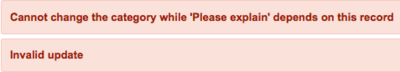

Attestations
Contents
1 Overview
Attestations are surveys administered to users and groups that assess how well Governance, Risk and Compliance policies are being enforced in an organization. Attestations are defined in control test definitions and ask a series of questions designed to ensure that designated users are taking appropriate action to reduce risk and satisfy specific controls. Attestations use the ServiceNow assessment engine. Attestations are available starting with the Fuji release.
2 How Attestations Work
An administrator creates attestations in the Control Test Definition form as part of the evidence gathering phase of evaluating an organization's compliance with its policies. The administrator creates the questions, data types, and distribution lists to suit the control. Questions designated as attestations are mandatory and determine whether or not a user is performing tasks required by the control. These questions can also specify a correct answer. When a recipient answers an attestation question incorrectly, the system displays an additional, mandatory field that requires an explanation. You can include optional questions using other data types that gather specific information about the attestation questions. You can configure attestation scoring to accept a percentage of correct answers or to require that all answers be correct. These settings apply to attestation type questions only and not to the optional questions that gather supporting data. Attestations are sent when the control test definition is executed, either manually or on a schedule. Existing attestation questions can be edited in the Control Test Definition form or in the Assessment Metrics form. By default, an attestation has only one category, and the designated recipients are classified by the system as the category users for that category. An administrator can create additional categories containing subsets of questions from an attestation and assign an entirely different set of users to each category.
3 Creating an Attestation
In this attestation example, an organization is updating their Sophos antivirus software and wants to track progress to ensure that the process is conducted properly. They want to know if the upgrade was completed without problems and whether or not the schedule was followed. They also want to know some optional information about the upgrade, such as the number of computers upgraded and the new version numbers. The attestation contains some mandatory questions with prescribed answers that are scored by the system. The optional questions are not scored.
- Navigate to GRC > Administration > Control Test Definitions.
- Click New.
- Fill in the top part of the form, as appropriate, using the field descriptions in Creating a Control Test Definition.
- Select Collect supporting data.
- In the Condition type field, select Attestation.
- Complete the fields on this form. Refer to the table on this page for details.
- Use the arrow buttons to the right of each question to reposition it.
- Make sure to place optional questions that provide additional information adjacent to the questions they support.
- Click the circle icon () to delete a question from the attestation.
- When you are through creating and arranging the questions and have selected at least one recipient, click Submit.
- You must have at least one questions to submit or save a record.
- Click Execute Now to send the attestation to the users or groups specified.
{kind=link}
{kind=link}
| Field | Description |
|---|---|
| Signature | [Optional] Assertion presented to a user containing requirements, admonitions, or expectations related to an attestation. You can require users to certify that they have read and understand these assertions by having them select a check box or authenticate their full name with a user name and password. You can display assertions without requiring a signature. Select an existing signature from the list or click New to create a new one. The signature form contains these fields:
By default, a property called Require authentication for user signature requires users to authenticate their full name signature. When configured for authentication, the system provides the full name of the logged in user in a read-only field. Signatures are available starting with the Fuji release. |
| Allow retake | Check box that allows users to modify their answers to a completed attestation. When this check box is selected, users can resubmit the attestation as many times as they want until the due date. After the due date, the system removes the attestation from the user's My Assessments and Survey's page. If the State of the control test instance for the attestation changes to Success or Failure prior to the due date, the system removes the attestation from the My Assessments and Survey's page, and no further modifications are allowed. This field is available starting with the Fuji release. |
| Attestation introduction | Introductory content presented to the recipients with the questions. Provide whatever instructions, admonitions, or reminders that you think are necessary to help the recipients complete the attestation. You can include images and links in the message and format it using the controls provided. |
| Attestation questions | Control test questions sent to the named recipients or groups. All questions have a default data type of Attestation and require you to provide the correct Yes/No answer. If a recipient answers an attestation question incorrectly, the system automatically presents a text field requiring an explanation. By default, both the attestation question and its explanation are mandatory. However, you can customize these and other fields by using controls in the assessment metrics user interface. Use the other data types to create optional questions that provide supporting data for the attestation questions. Each question contains a data type choice list, which displays the appropriate configuration options for each type. The system does not allow duplicate answer options for Choice type questions. When you select an Attestation type question, the form displays the Follow-up question field that sets the field label for a recipient's explanation of a non-compliant answer. You can edit this label to suit your own requirements. Follow-up questions are optional and not scored by the system. |
| Copy questions from | [Optional] Existing attestation questions to copy for this record. Only control test definitions with a Condition type of Attestation appear in this list. The system deletes any questions already entered and replaces them with the questions from the control test definition you selected. |
| Recipients | Users or groups selected to answer the attestation questions. The possible selections are: Select users and Select groups. The system displays a selection list for either users or groups. To add or delete users or groups from the list, click the lock icon. You must select at least one recipient to submit a control test definition record for an attestation. Recipients added in this field receive all questions assigned to the attestation unless the following customizations have been made:
|
{kind=link}
4 Editing an Attestation
You can edit or delete questions in the control test definition record prior to any recipient submitting answers. Questions that have results become read-only and can only be deactivated. Deactivated questions do not appear on subsequent distributions of the attestation.
- Navigate to GRC > Administration > Control Test Definitions.
- Open a control test definition with an attestation.
- Use the arrow buttons to the right of each question to reposition it.
- Make sure to place optional questions that provide additional information adjacent to the questions they support.
- You can edit any question that does not have results, or click the circle icon () next to the question to delete it.
- When a question has results, click the circle icon to deactivate the question.
- Click the circle icon next to a deactivated question to activate it again.
- Click Update.
- You must have at least one question to update a control test definition with an attestation.
{kind=link}
5 Viewing Control Test Results
Control test results display the questions, the recipient's answers, and whether or not the attestation passed or failed. In this example, 50% of the responses are complete and the results are published in the list, showing a failure for one of the mandatory question and for the explanation. The results show only whether a question passed or failed and do not indicate the scoring type. To see the results for the different scoring types, Percent and All or nothing, look at the Results view in the attestation scorecard. Users who answered this question incorrectly are counted in the Non-compliant results field.
- Navigate to GRC > Administration > Control Test Definitions.
- Open the control test definition whose attestation results you want to view.
- In the Control Test Instances related list, select the control test record you want to view.
- Records are listed by creation date.
- Examine the results under Supporting Data.
{kind=link}
Control test results display the following information:
| Field | Description |
|---|---|
| Non-compliant attestations | List of users who answered one or more attestation questions incorrectly in this control test. Questions with a Condition type of Attestation or are scored, must be answered correctly to be compliant. You can customize default question characteristics and controls in the Assessment Metrics form. |
| Data purpose | The purpose of the data produced by this test. All attestation results are labeled Support test execution by default. |
| Compliant results | Number of executed attestations for which recipients answered all questions correctly. |
| Percent complete | Percentage of assigned attestations completed and submitted for this control test. |
| Non-compliant results | Number of submitted attestations for which recipients answered one or more questions incorrectly. |
| Assign to - order | User who answered each question in this control test, combined with the order of the question. This column ensures that the follow on questions for incorrect answers are displayed adjacent to the scored, attestation questions to which they relate. |
| Name | Full text of the question from the attestation. By default, the label for all explanation questions is Please explain, but this label can be changed for individual explanation questions in the Control Test Definition form. This question is mandatory, unless customized in Assessments to be optional. |
| String value | Answer to a question provided by a recipient. Answers to all questions, both mandatory and optional, are displayed, unless the answer was left blank. Follow-on explanation questions are blank if their mandatory status was changed by field customization and if they were not answered by the recipient. |
| Passed | Result for each scored question in the attestation. Possible results are Passed or Failed. To see the actual score for the attestation, refer to the Results view in the attestation scorecard. Optional questions that supply supporting data for the attestation are not evaluated. |
6 Advanced Configuration
Governance, Risk and Compliance attestations are driven by the ServiceNow assessment engine. You can access GRC attestations from the Assessments application to add functionality. For example, an administrator can:
- Create additional categories and category users.
- Configure scoring for data types other than Attestation and edit weighting of questions.
- Make questions for other data types mandatory.
- Create additional dependent questions.
- Re-categorize questions.
To open an attestation from the Assessments application:
- Navigate to Assessments > Metric Definition > Types.
- In the Assessment Metric Types list, remove the Evaluation method = Assessment condition from the filter.
- To see attestation metric types, configure the list to show the Evaluation method column.
- Select the attestation record you want to edit.
{kind=link}
6.1 Re-Categorizing Questions
All questions added to a control test definition go into the default assessment metric category the system creates when you submit the control test definition. You can create new categories and move questions between categories, but must follow a specific procedure when moving a question that has a dependent relationship with another question. Follow this best practice procedure to create new categories and move dependent questions.
- Create the questions needed for the attestation in the control test definition.
- This places all the questions into the initial, default category.
- Create a new category.
- Locate a question you want to recategorize that has a dependent relationship with another question.
- An example of this is the Please explain question that is triggered by an incorrect answer to an attestation type question. The system prevents you from moving either question to another category until this dependency is reconciled.
- 
- Open the Assessment Metric record for the dependent child question.
- In the General section of this record, clear the value in the Depends on field.
- This removes the dependency between the questions.
- Move this question to the new category by changing the value in the Category field.
- Move the parent question to the same category using the Assessment Metric form.
- Reopen the Assessment Metric record for the child question and reestablish the dependency by selecting the parent question in the Depends on field.
- Repeat this process for each pair of dependent questions.
- Move any independent questions between categories simply by changing the value in the Category field.
{kind=link}
{kind=link}
7 Email Notifications
By default, GRC sends email notifications to managers, owners, and recipients of attestations advising them when specific duration milestones occur. The Control test owner is the user named in the Assigned to field of a control test definition. The assessment engine notifies the recipient's manager when an attestation is past due. Duration is configured in the control test definition form.
| To | When Received | Email Notification Name |
|---|---|---|
| Control test owner |
|
|
| Owner's manager |
|
|
| Attestation recipient |
|
|
| Recipient's manager |
|
|